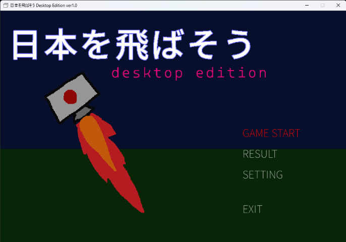
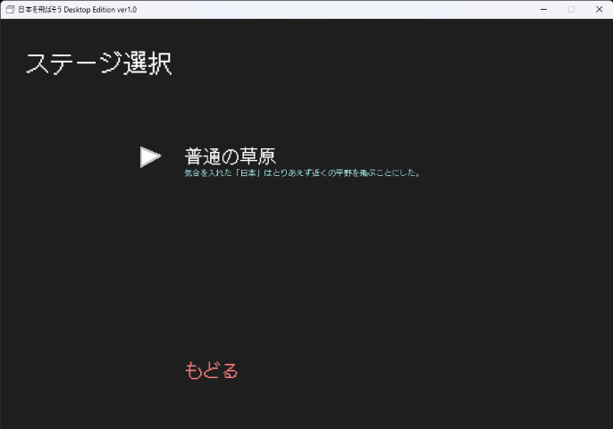
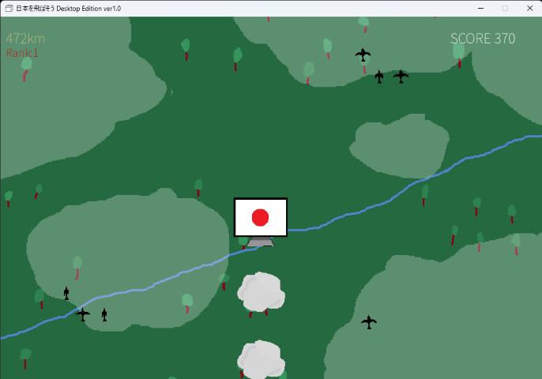
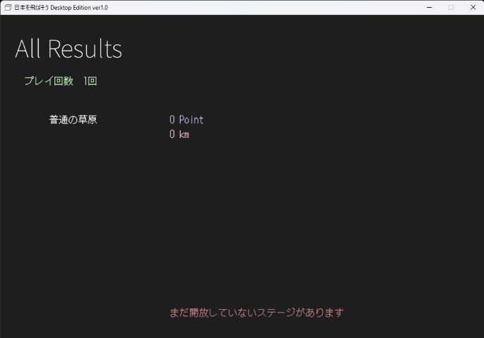
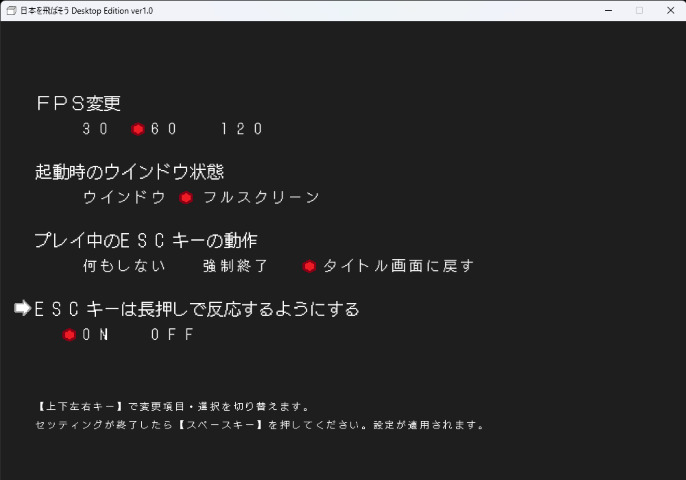

|  |
タイトル画面です。項目は次のとおりです。 GAME START ゲームを始める RESULT プレイの記録を見る SETTING ゲームのセッティング EXIT アプリを閉じる 矢印キーで選択してスペースキーで決定します。 |
|  |
GAME STARTを選択するとステージ選択画面です。 上下キーで選んでスペースキーで決定します。 最初は「普通の平原」しか遊べませんが、条件を達成すると次のステージが開放されます。 |
|  |
ステージを選択するとゲーム開始です。 【基本操作】 スペースキー 自機の推進 左右キー 自機の移動 自機は推進せずに放っておくとスピードに負けて落ちてしまいます。 敵にあたってしまってもいけません。 周りを浮遊している敵に当たらないようにしてできるだけ長く飛翔できるように スペースキーを連打して頑張りましょう。 【画面内の表示について】 〇〇km 左上にある値は飛距離です。自動で増えていきます。後述する「ランク」の値が大きくなるほど増えやすくなります。 Rank◯ 飛距離の下にある値は現在の「ランク」を示しています。詳しくは後ほど。 SCORE ◯◯ スコアです。スペースキーを押すと増えます。「ランク」の値が大きくなるほど増えやすくなります。 ＊「ランク」(Rank)について＊ この値はゲームの難易度に直結しています。 ステージ開始時は「1」ですが、ゲームを進めていくにつれて時間で増えていきます。 この値が大きくなるとスペースキー連打の効果が小さくなっていきます(自機の落下の速度が早くなる)。 そのため、ステージ開始から時間が立つにつれてスペースキー連打はたくさん必要になります。 |
|  |
タイトル画面で「RESULT」を選択すると、現在のプレイの状況や記録が分かります。 ステージごとに飛行距離とスコアの最高記録が保存されています。 |
|  |
タイトル画面で「SETTING」を選択すると、セッティング画面へと移行します。 矢印キーで項目や設定を選びます。スペースキーで保存＆タイトル画面に戻ります。 【セッティング項目】 |